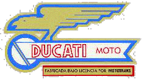
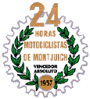
AVISO:
Algunas fotos proceden de Internet; si crees que deberían ser quitadas de la página, por favor escribe un correo eléctronico.
Esta página no tiene ánimo de lucro.
LOS CICLOMOTORES DE MOTOTRANS (BREVE HISTORIA):
El primer paso hacia la comercialización de ciclomotores de la fábrica de Barcelona fue en 1963. Antes existían los Cucciolo, ajenos a Mototrans, y en ese año se importan dos modelos italianos que se presentan en la Feria de Muestras de Barcelona. Los modelos son muy diferentes el uno del otro: uno es un ciclomotor de chasis abierto y estética de paseo con pedales practicables, el modelo Piuma, y el otro es un velomotor con un acabado muy deportivo, el modelo 48 Sport. Ambos llevaban el mismo motor Ducati de 48 cc, con tres marchas en el puño, aunque el modelo sport tenía un carburador más inclinado y desarrollaba una velocidad de 70 km/h. La ley que limitaba a los ciclomotores a desarrollar una velocidad máxima de 40 km/h obligó a catalogar al modelo Sport como velomotor. Los materiales utilizados para fabricar estos motores eran de primera calidad y utilizaban marcas como Borgo Tarabusi, carburadores Dell´Orto y Cip, suspensiones telehidraúlicas y detalles estéticos utilizados en las motocicletas: pintura metalizada, acabados-fileteados del depósito, etc.
El éxito de estos modelos, sobre todo del modelo Sport, animó a la fábrica a seguir con esta línea de fabricación y presentó el modelo Rolly, parecido al Piuma pero con cambio automático y más sencillo, incluyendo el propio depósito de gasolina en el chasis (al estilo de las Motobecane-Mobylette) y un peso de 45 kg. El motor era el mismo que los anteriores modelos. Posteriormente se presentó el ciclomotor Junior, modelo totalmente español, parecido al Rolly, pero con el motor 48 cc de refrigeración forzada por turbina.
Ricardo Fargas, aprovechando elementos sobrantes de la fábrica, diseñó el primer ciclomotor de Ducati de todo terreno, el 50 TT, que tuvo una buena reputación de ciclomotor fiable, montando el mismo motor italiano de tres marchas y en su segunda versión, la más difundida, el motor de refrigeración forzada. En 1969 se fabricaron dos ciclomotores bajo el nombre MT, motor Ducati y una estética bastante fea, en comparación a los modelos italianos.
Se presenta el ciclomotor Mini 2 en 1970, destinado al transporte de pequeños paquetes, al incluir un transportín en la parte delantera y en la parte trasera. Eran de un color amarillo industrial que no pasaba desapercibido, con unas ruedas de diámetro 12´ que no lo hacían levantar un palmo del suelo. Anteriormente, Mototrans había fabricado para una empresa de Valencia (Dismave) una minimoto con motor Ducati 48 cc automático, el Minimarcelino, pensado para solucionar los problemas de tráfico en las grandes ciudades.
En 1972 se dió el paso más importante en la construcción de ciclomotores de Mototrans: se incorporaba un motor de 4 velocidades y 49, 6 cc. El primer modelo que se fabricó con este motor fue el 50 TS, modelo de carretera con muy buena presencia y mejorado en todos los aspectos: nuevos frenos, suspensiones, potencia, etc. Se presenta el 50 TT "segunda generación" al año siguiente, versión todo terreno del 50 TS, incluyendo guardabarros elevados, ruedas de campo, tubo de escape "por arriba", suspensión trasera diferente, depósito de gasolina y asiento. En 1975 se presentan los modelos Pronto y Senda, modelos de carretera y campo respectivamente, que vienen a sustituir a los modelos anteriores. Las mejoras afectan a la parte ciclo de las motos, eliminando los fallos que se daban en las versiones anteriores. También se fabrica el modelo Mini 3, el último con motor 3 velocidades.
Una posterior evolución de estos ciclomotores llevó a fabricar el modelo Pronto en versiones de 75 cc. y 100 cc. y un modelo de Senda de 75 cc. El último ciclomotor con motor Ducati fue el Cross 50, que se presentó en el Salón del Automovil de Barcelona de 1977.
En 1980, con un cambio muy grande en la estructuración de la industria española, Mototrans fabrica bajo las siglas MTV dos ciclomotores con motor Zundapp alemán, el Cross y el Sport. Los ciclomotores eran muy bonitos, con fibra para el depósito, laterales, etc y un motor que estaba a la altura de las circunstancias. Se vendieron bien y aún se puede ver alguno por ahí, circulando ajeno al paso del tiempo. Desgraciadamente, no hay recambio para repararlos.
Otras marcas españolas, como Bultaco y Ossa, compraron motores a Mototrans para utilizarlos en sus ciclomotores. Bultaco montó el motor Ducati en sus ciclomotores Bultaco 49 y Chispa y Ossa lo hizo en algunas de sus versiones de 50 cc.
Características técnicas de los motores de ciclomotor:
Motor 3 marchas: Monocilíndrico, dos tiempos; eje del cilindro inclinado 25º hacia delante respecto a la vertical. Díametro por carrera: 38 mm X 42 mm. Cilindrada: 47, 6 cc. Relación de compresión: 8:1 para Piuma y 48 TS; 9,5:1 para 48 Sport. Potencia efectiva: 1,8 CV para Piuma a 5800 rpm, 2,5 CV para 48 TS a 6000 rpm y 4,2 CV para 48 Sport a 9600 rpm. Carburador Dell´Orto T4 para Piuma y TS, CArburador Dell´Orto UA-15 S para la 48 Sport.
Motor 4 marchas: Monocilíndrico, dos tiempos; Díametro por carrera 38 mm X 43 mm. Cilindrada 48,6 cc. Relación de compresión: 10,5:1. Potencia efectiva 2 CV a 5200 rpm. Carburador Dell´Orto SHA 12/12.
ALGUNAS FOTOS DE LOS CICLOMOTORES:
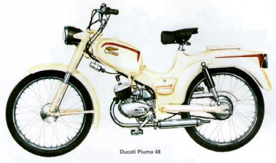
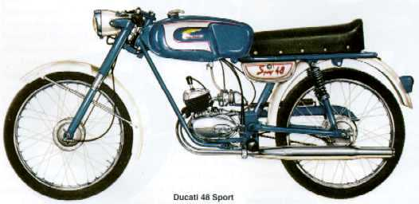
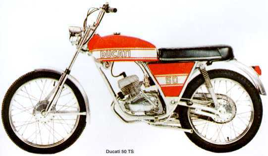
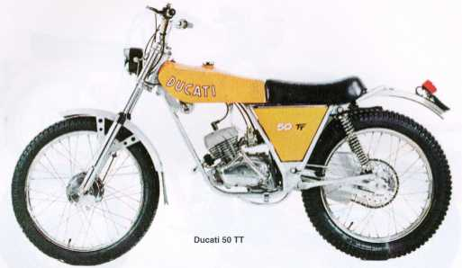
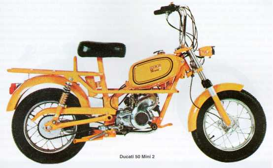
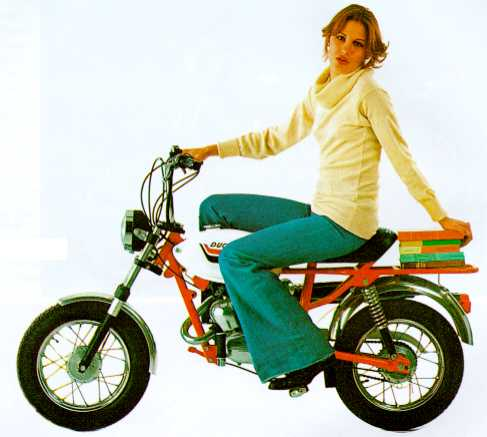
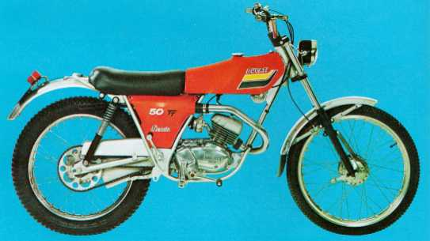
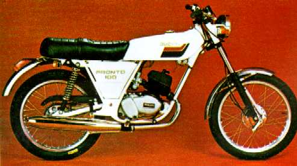
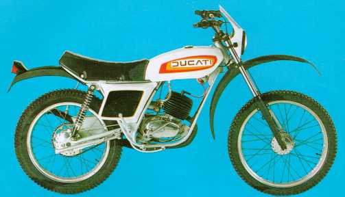
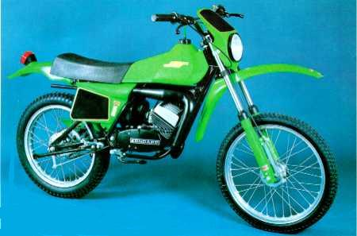
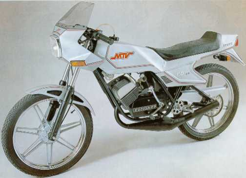